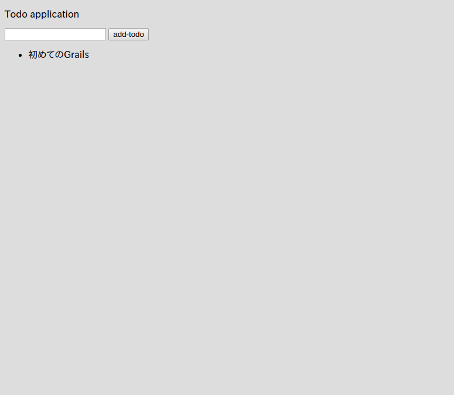
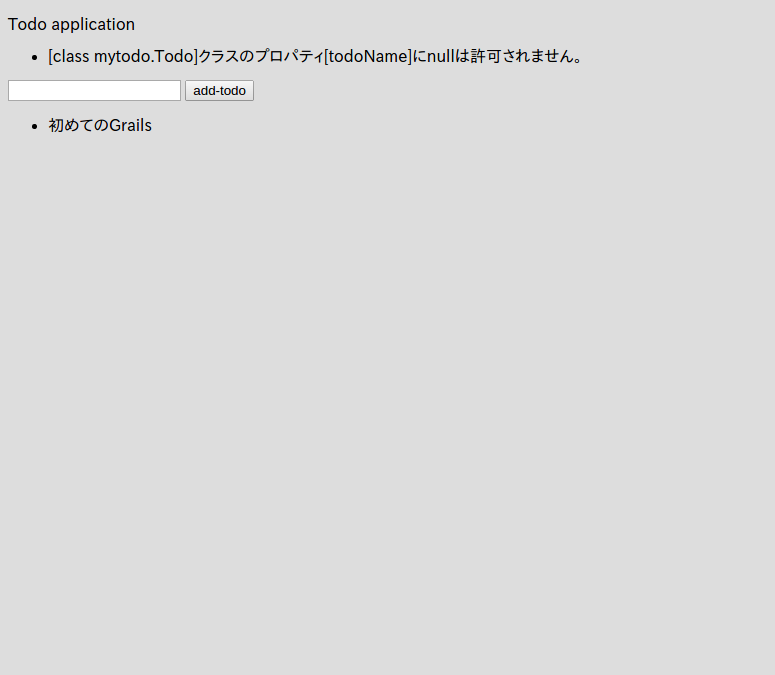

3.4.フォームのデータを保存
では、実際にフォームでデータを送信して、そのデータをデータベースに保存するようにしてみましょう と言っても本当に簡単です。
まず、フォームからデータを受け取って保存する部分をController ‘controllers/mytodo/IndexController.groovy’ に記述します。
package mytodo
class IndexController {
def index() {
// there is no problem about code completion on controller.
render(view:'/index/index', model:[todos : Todo.listOrderById()])
}
def formTest() {
String todoName = params.todo
render todoName
}
// ココを追加。ここでフォームのデータを受け取ってデータベースに保存している。
def save() {
String todoName = params.todo
Todo newTodo = new Todo(todoName: todoName)
if (newTodo.validate()) {
newTodo.save()
redirect(controller: "index", action: "index")
} else {
render(view:'/index/index', model:[errorTodo: newTodo, todos: Todo.listOrderById()])
}
}
}
そして grails-app/views/index/index.gsp も少し修正します。
<!DOCTYPE html>
<html>
<head>
<meta name="layout" content="my-layout"/>
<meta charset="UTF-8">
<title>ToDo</title>
</head>
<body>
<p>Todo application</p>
<!-- エラーメッセージを表示する部分を追加 -->
<g:renderErrors bean="${errorTodo}" as="list" field="todoName"/>
<!--actionを先ほど追加したsaveに変更-->
<g:form controller="index" action="save">
<g:textField name="todo"/>
<g:submitButton name="add-todo">Add Todo</g:submitButton>
</g:form>
<!-- 追加 -->
<ul>
<g:each in="${todos}" var="todo">
<li>${todo.todoName}</li>
</g:each>
</ul>
</body>
</html>
コレで完了です！
ではhttp://localhost:8080/index/indexにアクセスして、何か入力して「add-todo」をクリックしてみましょう。

登録出来ました！
ところで、普通に考えて何も入力せずに「add-todo」をクリックするとエラーになるべきですよね？
では、何も入力せずに「add-todo」をクリックして試してみましょう！

なんと！ちゃんとエラーが表示されましたね！
このエラーメッセージはGrailsが用意してくれているもので、さらにi18n機能と連携しているので、ブラウザの言語設定によってメッセージが自動的に最適な言語に切り替わります。
コレでToDoを保存する最低限の機能が実装できました。